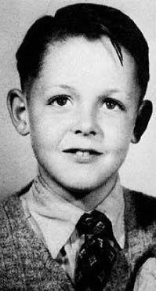

Paul McCartney

Born in Liverpool, McCartney taught himself piano, guitar and songwriting as a teenager, having been influenced by his father, a jazz player, and rock and roll performers such as Little Richard and Buddy Holly. He began his career when he joined Lennon's skiffle group, the Quarrymen, in 1957, which evolved into the Beatles in 1960. Sometimes called "the cute Beatle", McCartney later involved himself with the London avant-garde and spearheaded the incorporation of experimental aesthetics into the Beatles' studio productions. Starting with the 1967 album Sgt. Pepper's Lonely Hearts Club Band, he gradually became the band's de facto leader, providing the creative impetus for most of their music and film projects. Many of his Beatles songs, including "And I Love Her", "Yesterday", "Eleanor Rigby", and "Blackbird", rank among the most covered songs in history.[5][6] While primarily a bassist with the Beatles, in various songs he played a number of other instruments, including keyboards, guitars, and drums.
After the Beatles disbanded, he debuted as a solo artist with the 1970 album McCartney and formed the band Wings with his first wife, Linda, and Denny Laine. Led by McCartney, Wings was one of the most successful bands of the 1970s, and he wrote or co-wrote their US or UK number-one hits "My Love", "Band on the Run", "Listen to What the Man Said", "Silly Love Songs", and "Mull of Kintyre". He resumed his solo career in 1980 and has toured as a solo artist since 1989. Without Wings, his UK or US number-one hits have included "Uncle Albert/Admiral Halsey" (with Linda), "Coming Up", "Pipes of Peace", "Ebony and Ivory" (with Stevie Wonder), and "Say Say Say" (with Michael Jackson). Beyond music, he has taken part in projects to promote international charities related to such subjects as animal rights, seal hunting, land mines, vegetarianism, poverty, and music education.
McCartney has written or co-written a record 32 songs that have topped the Billboard Hot 100 and, as of 2009, had sales of 25.5 million RIAA-certified units in the US. His honours include two inductions into the Rock and Roll Hall of Fame (as a member of the Beatles in 1988 and as a solo artist in 1999), an Academy Award, a Primetime Emmy Award, 18 Grammy Awards, an appointment as a Member of the Order of the British Empire in 1965 and a knighthood in 1997 for services to music. As of 2020, he is one of the wealthiest musicians in the world, with an estimated fortune of £800 million.
Early life
McCartney was born on 18 June 1942 at Walton Hospital in the Walton area of Liverpool, where his mother, Mary Patricia (née Mohin), had qualified to practise as a nurse. His father, James ("Jim") McCartney, was absent from his son's birth, due to his work as a volunteer firefighter during World War II. Both of his parents were of Irish descent.[8] McCartney has a younger brother, Peter Michael, and a younger stepsister, Ruth, born to his father's second wife, Angie, during her first marriage.[9] Paul and Michael were baptised in their mother's Catholic faith, even though their father was a former Protestant who had turned agnostic. Religion was not emphasised in the household.
According to his biographer Peter Ames Carlin, McCartney's parents came from the "lowest rungs of the working class"[11] but had experienced some upward social mobility during their lifetimes. Before the war, Jim had worked as a salesman for the cotton merchants A. Hannay and Co., having been promoted from his job as a sample boy in their warehouse; when the war broke out, Hannay's was shuttered, and Jim was employed as a lathe turner at Napier's defence engineering works, volunteering for the fire brigade at night.[12] The growing family was rehoused at a flat in Knowsley in 1944 and then in a council housing development in Speke in 1946. After the war, Jim returned to his job at the cotton merchants with a reduced income. Mary's work as a visiting midwife was much more remunerative.
McCartney attended Stockton Wood Road Primary School in Speke from 1947 until 1949, when he transferred to Joseph Williams Junior School in Belle Vale because of overcrowding at Stockton.[13] In 1953, he was one of only three students out of 90 to pass the 11-Plus exam, meaning he could attend the Liverpool Institute, a grammar school rather than a secondary modern school.[14] In 1954, he met schoolmate George Harrison on the bus from his suburban home in Speke. The two quickly became friends; McCartney later admitted: "I tended to talk down to him because he was a year younger.
Mary McCartney's midwifery paid well, and her earnings enabled them to move into 20 Forthlin Road in Allerton,[17] where they lived until 1964.[18] She rode a bicycle to her patients; McCartney described an early memory of her leaving at "about three in the morning [the] streets ... thick with snow".[19] On 31 October 1956, when McCartney was 14, his mother died of an embolism as a complication of surgery for breast cancer.[20] McCartney's loss later became a connection with John Lennon, whose mother, Julia, died in 1958 when Lennon was 17.
McCartney's father was a trumpet player and pianist who led Jim Mac's Jazz Band in the 1920s. He kept an upright piano in the front room, encouraged his sons to be musical and advised McCartney to take piano lessons. However, McCartney preferred to learn by ear.[22][nb 1] When McCartney was 11, his father encouraged him to audition for the Liverpool Cathedral choir, but he was not accepted. McCartney then joined the choir at St Barnabas' Church, Mossley Hill.[25] McCartney received a nickel-plated trumpet from his father for his fourteenth birthday, but when rock and roll became popular on Radio Luxembourg, McCartney traded it for a £15 Framus Zenith (model 17) acoustic guitar, since he wanted to be able to sing while playing.[26] He found it difficult to play guitar right-handed, but after noticing a poster advertising a Slim Whitman concert and realising that Whitman played left-handed, he reversed the order of the strings.[27] McCartney wrote his first song, "I Lost My Little Girl", on the Zenith, and composed another early tune that would become "When I'm Sixty-Four" on the piano. American rhythm and blues influenced him, and Little Richard was his schoolboy idol; "Long Tall Sally" was the first song McCartney performed in public, at a Butlin's Filey holiday camp talent competition.